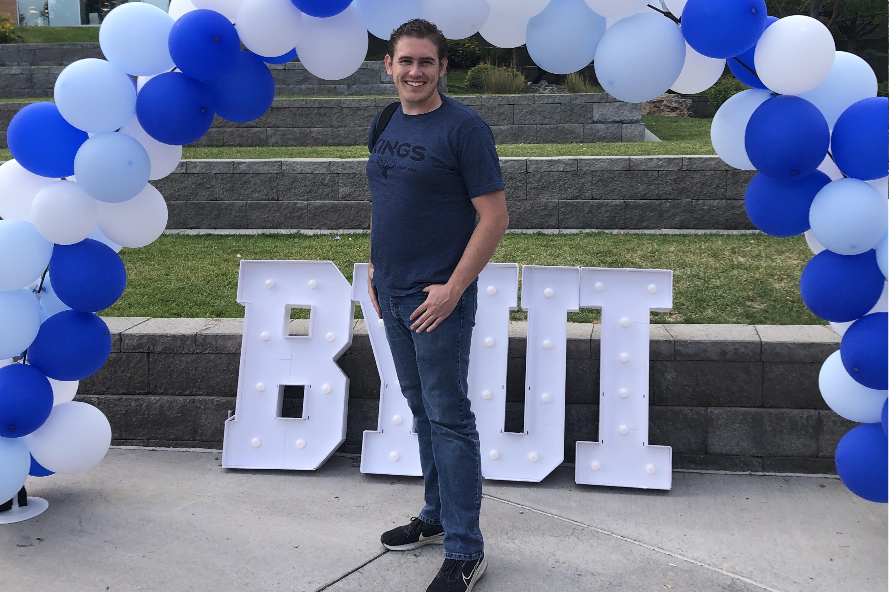

Ezekial Curran
I am pursuing a degree in Computer Science with a minor in mathematics and a certificate with machine learning.
I am the second oldest of four siblings. I really enjoy messing with technology, experimenting with it and pushing it to its limits. I have definitely made frankenstein computers before just for the purpose of exploration.